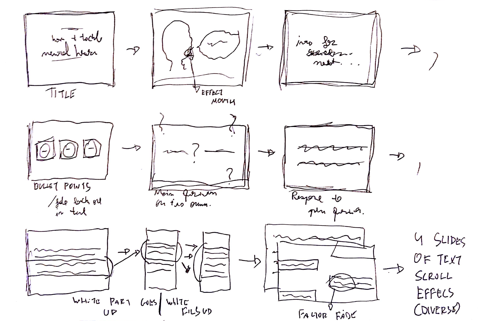

Tackling the issue of Mental Health
Motion Graphics
In this project, I've decided to try and raise awareness to the stigmatisation of general Mental Health problems. Through outlining the problem, as opposed of simply exposing it, I'm trying to open a dialogue with the viewers, for them to reflect on the problem. I've approached the topic very carefully by remaining neutral and by simply providing information on the actual problem.
I've started by writing a script that would be enough to present the issue.
The full script can be found on the right and the sections in bold are what I chose to illustrate on the video. These sections also relate with the storyboard below.
A sentence greeted with understanding, offers of help, and ‘Get Well Soon’-cards. So why aren’t mental illnesses greeted with the same sympathy?
Unlike physical illnesses, mental illnesses are usually not visible to outsiders. This leads many people to believe that someone is just faking their illness or is exaggerating.
This trivialisation leads in turn to stigmatisation of mentally ill people. With mental illnesses not being taken seriously, more people are reluctant to get professional help out of fear of not being accepted within their society.
While mental illnesses can theoretically affect anyone, as with every illness there are certain factors that can increase the risk. These include social exclusion, constant pressure to perform and economic instability.
However, emotional wellbeing and mental health are often still a ‘luxury problem’ of middle classes, with lower social classes giving more importance to functionality and physical health. This calls for varying and individual approaches of tackling the issue of mental illnesses within different social groups.
Looking at the high number of suicides all over Europe, the pressure to find solutions to the issue of mental health is on.
How can the we provide easier access to professional help for mentally ill people, and tackle the stigmatisation around it, so that they can be treated equally?
